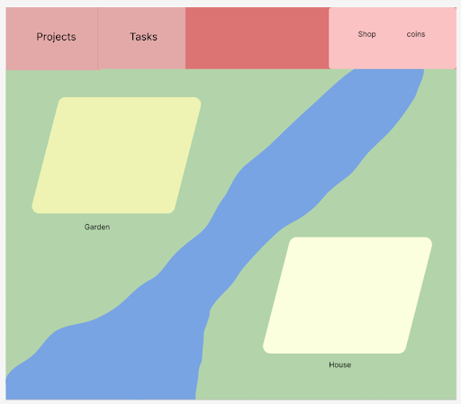

Project Sprout - Grow Your Future
Team

Silvana Mendoza
Role: Project Manager, Backend developer, UI/UX designer
Passion for efficient systems and intuitive design and accessibility. Focusing on backend server side logic.

Christopher Rotondo
Role: Front End Developer
Software developer with a passion for creative design and an interest in front end development and user experience

Jacob Cohen
Role: Principal Engineer
Software developer passionate about web dev and AI/ML, supports all aspects of the development process and helps get other developers unstuck.

Donald Winkelman
Role: Backend developer, database administrator, documentation
Long-time creative project developer with a flare for database design and administration.
Overview
Project Sprout is an all-in-one productivity and organization app that encourages healthy habits. Our goal for this project is to encourage consistent productivity habits by gamifying studying and the Pomodoro. In addition to keeping track of Pomodoro data, the web-app extends the Pomodoro by growing a plant for each Pomodoro a user does with a height dependent on the length of the Pomodoro. Additionally, users can sell the plants to earn money they can use to upgrade a virtual house in the middle of their . Users can also see their past Pomodoro gardens each representing a year. This in addition to the house they can upgrade and maintain over the years from Pomodoros will give users an incentive to study and a sense of accomplishment from doing so. In addition to the Pomodoro feature, our web-app will include a to-do list, habits list, and note taking app.
Application Parts
Pomodoro Timer
The Pomodoro timer is the core feature of our app and is based on the Pomodoro technique. The Pomodoro technique is a time management system where people work in roughly 25 minute intervals with roughly five-minute breaks. Longer breaks of around 20 minutes are taken after four consecutive work intervals. Our app will feature a Pomodoro timer with preset time intervals for work, short breaks, and long breaks. The user will also have the ability to customize their own Pomodoro timers and bookmark them on our web-app.
Pomodoro Visualization
The number of Pomodoros, when they’re done, and their length will all be tracked and visualized for the user. The most prominent visualization will be a garden where a new tomato plant grows for each Pomodoro a user does with a size dependent on the length of the Pomodoro. Each year, a user will have a new plot and past year’s tomato plots can be viewed. Money can be earned by harvesting tomato plants.
House/Shop
Money can be used in the shop to buy upgrades, items, and repairs for the house. This house is an interactive, customizable, rendered image that can be viewed on the plot page. If the website hasn’t been used by a user for a while, parts of the house will break and need repairs from the shop. The history of the user’s house can be seen on past year’s plots of land. We also want to give users a time lapse of how their house and garden change and grow over time.
To-do and Habit Lists
Users will be able to add items and ongoing habits onto lists viewable on our web-app.
Notes
Users will be able to save and view their notes on our web-app. We want to add various organizational features for user notes as well.
Data Requirements
Accounts
All of the data we need to store below is unique to each user, which makes allowing users to create accounts and authenticate themselves via sign in will be the cornerstone of our database and backend. To authenticate users, we will have them enter a username (most likely an email address) and password. In our database, the password will be automatically encrypted for security purposes. Users will have the ability to recover their account in case they forget their password by entering their email address and changing their password via an OTP sent to their email. Additionally, we will give users the option to enter in their phone number just in case they don’t want to use their email address for resetting their password. Additionally, if we add push notifications as a feature, we would be able to use user email addresses and phone numbers to notify them.
Pomodoro Data
We will store the number of Pomodoros a user has done, their length, and the dates they did their Pomodoros in our database. Displaying Pomodoros a user has done using satisfying visualizations is essential for our project so this data will be equally essential for us to store.
Pomodoro Timer Bookmarks
We will give users the ability to create their own Pomodoro timers with different work/break lengths. So we need to store this data and read it from our database to display for each unique user.
House Upgrades
Our database needs to keep track of the upgrades each user currently has on their house and the upgrades available for a user to purchase in the shop. This way, the house can be rendered out of widgets whenever the user opens the web app based on what upgrades they have and the shop can display their unique available purchases.
Repairs Needed
To implement our house degradation and repair feature, we need to keep track of the last time the user used the Pomodoro or other web-app features. If a long enough time has passed, the database needs to store what parts of the house are broken to render the house properly and provide the repairs as items in the shop.
Widget Storage
Because there are various unique widgets used for creating the house and garden, storing all of these on the client-side would increase loading times far too much and would not be viable. To solve this problem, we will store widgets in our database and allow the front end to request the specific widgets it needs for its logged-in user to render the house and garden.
To-do List Entries, Habits, and Notes
Users will write down their unique to-do list entries, habits, and notes which will need to be stored in our database for them to access whenever they revisit our website.
Wireframes
Pomodoro Timer Page

The Pomodoro page will be the main page of our website and an aggregator for its productivity features. There will be 2 sections of this page, the timer bar and the dashboard view. The timer bar allows users to select a specific project and task they are working on so that their progress towards this project/task is tracked. Once a project and task is selected, the user can select from a bookmarked Pomodoro timer setting or customize their own using the vertical ellipses button. The dashboard view holds data on past and current Pomodoros such as streaks and the current Pomodoro plant growing. This plant will grow dynamically as the current Pomodoro timer runs. There will also be a calendar and journal for users to keep track of their tasks and take notes.
Garden Page
The garden page will be the hub for the gamified elements of our website. This includes past and current gardens, the shop, a points counter, and the house. Whenever a user completes a Pomodoro, they can plant it in the garden. To earn points, users harvest tomatoes in the garden. Various items, upgrades, and repairs to the house and garden can be purchased in the shop.
Real-World Connection
Productivity and Organization
Our app will extend the Pomodoro by visualizing its long-term, consistent usage for our users. This will encourage our users to be more productive and organized over the long-term. By gamifying the Pomodoro using a gardening simulator, the site will encourage users to make the Pomodoro technique a healthy habit. The house upgrade/repair mechanic will give our users an even longer-term sense of accomplishment for maintaining their habit over multiple years. Allowing them to visualize their years of hard work will give them the sense they’re building towards something tangible and rewarding. Additionally, a user stopping the habit will cause repairs to be needed on the house which will encourage them to continue their habit to “maintain” their house and gardening. The to-do list and habit list will help users both finish all their tasks in time and maintain their habits. If we have time, we’d like to gamify and add visualizations for these additional features along with the Pomodoro. Finally, we want to implement several note-taking features into our app. We eventually strive to make it an all-in-one productivity website for our users, but to create an MVP, we currently have the Pomodoro technique gamification feature as our focus.
Integrative Experience
Capstone Project
All of us are college students who have struggled for years with productivity and organization. The fact that we’ve made it this far shows we were, miraculously, able to create helpful study habits and organizational methods. Additionally, we have learned valuable programming tools and techniques from our classes and from the several projects we’ve contributed to outside of class. We want to combine all the terrible lessons we’ve learned from procrastinating with our slightly less terrible knowledge of software development to create a web app that can make a difference in the world by making being productive feel more fun and impactful. We are excited to test out our skills by building a real-world application and maintaining it/adding features as our user base grows. We strive to keep our motivation centered on creating an app that can solve our own lingering productivity problems and likely the productivity problems of many other people. Every feature we add will be features we would want to use throughout our lives, although we are excited to accept bug reports and recommendations to further develop our web app. We hope this project will help us learn more about working in groups on high-impact projects so that we can continue to implement helpful ideas.